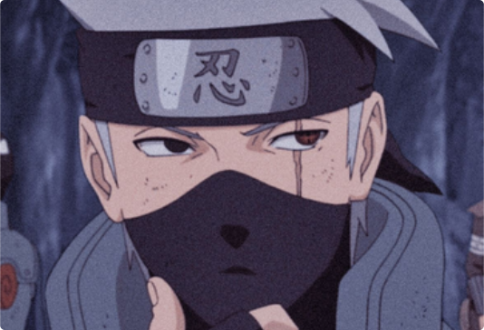
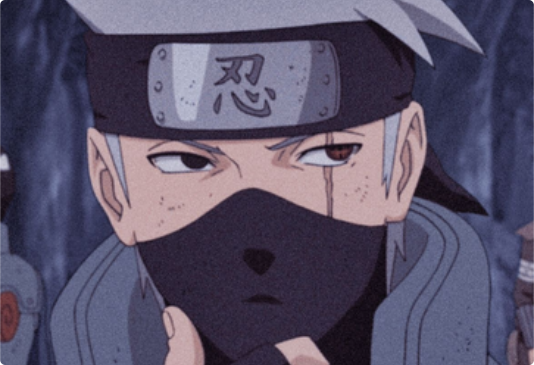

Kakashi
Kakashi Hatake (はたけカカシ, Hatake Kakashi) é um shinobi de Konohagakure. Ele recebeu um Sharingan de seu ex-companheiro de equipe, Obito Uchiha, quando era mais jovem, fazendo-o ser conhecido como Kakashi o Ninja Copiador (コピー忍者のカカシ, Kopī Ninja no Kakashi) e Kakashi do Sharingan (写輪眼のカカシ, Sharingan no Kakashi).
 

Seu prodigioso talento, habilidades e destreza com o Sharingan fizeram dele um dos mais capazes ninjas da aldeia, sendo reconhecido em todo o mundo ninja. Ele acaba sendo nomeado como líder do Time Kakashi, onde ele usa seus anos de experiência para treinar seus alunos para se tornarem ninjas habilidosos de suas próprias maneiras.
Logo um tempo após a Quarta Guerra Mundial Shinobi, Kakashi ocupa o cargo público como o Sexto Hokage (六代目火影, Rokudaime Hokage; literalmente significa: "Sexta Sombra do Fogo") antes de eventualmente se aposentar e passá-lo ao seu pupilo Naruto Uzumaki.
“O lugar onde as pessoas pensam em você é o lugar para onde você deve sempre retornar!” - Kakashi Hetake
- Afiliação: Aldeia da Folha
- Clã: Hetake
- Times: Time Kakashi ou Time 7
- Patente Ninja: Jônin
- Registro Ninja: 009720